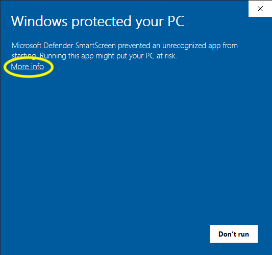
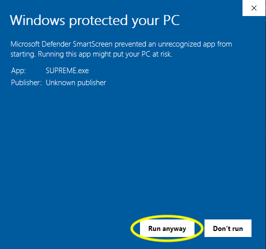
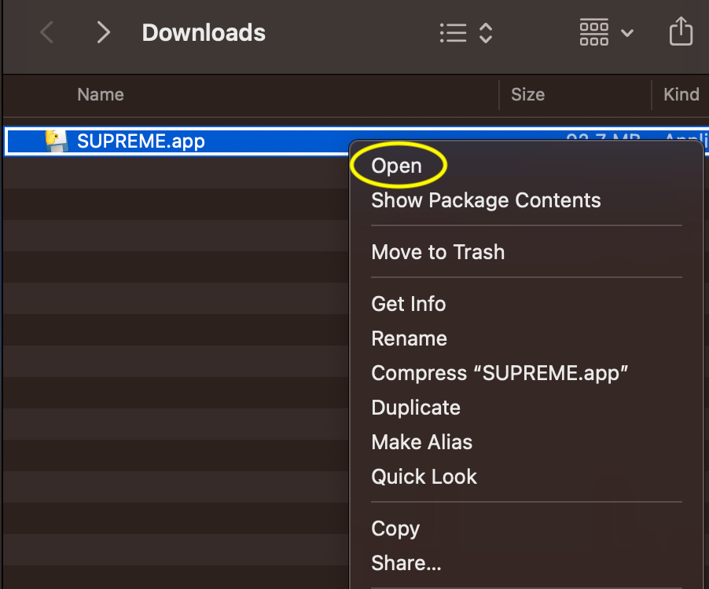
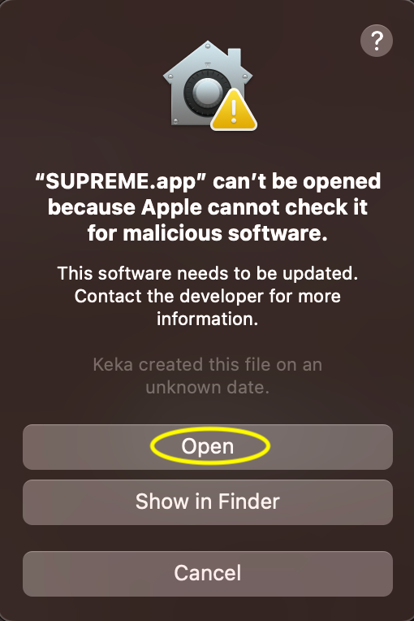

Thank you for completing the survey!
Please download the task using the appropriate instructions for your operating system.
Feel free to take a short break while it is downloading.
When you are ready, follow the instructions to begin the cognitive tasks.
Your 4 character task code is {{ subject_task_code }}.
Please make a note of this code so that you can enter it in the task along with your Prolific Worker ID.
1. After downloading, locate the downloaded file and double-click it."
2. If prompted with a security warning, click "More info" and then "Run anyway."
 1. After downloading, locate the .app file, usually in your Downloads folder.
2. Right-click the .app file and select "Open" to bypass macOS security restrictions.
3. In the pop-up that appears, click "Open" again to confirm.
